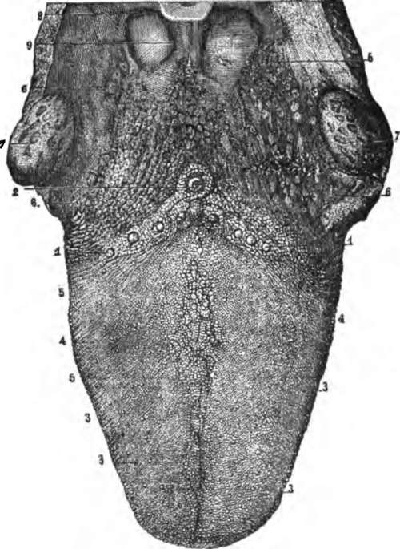

The Tongue
Description
This section is from the book "The Human Body: An Elementary Text-Book Of Anatomy, Physiology, And Hygiene", by H. Newell Martin. Also available from Amazon: The Human Body.
The Tongue
The Tongue (Fig. 46) is a muscular and highly movable organ, covered by mucous membrane, and endowed not only with a delicate sense of touch, but with the sense of taste. Its root is attached to the hyoid bone (p. 38). The mucous membrane covering the upper surface of the tongue is roughened by numerous minute elevations or papillæ, of which there are three varieties. The circum vallate papillæ (Fig. 46,1 and 2) are the largest and fewest, and lie near the root of the tongue, arranged in the form of a V, with its open angle turned towards the lips. The fungiform papillæ are rounded masses attached by narrower stems. They are found all over the middle and fore part of the upper surface of the tongue, and in healthy persons are recognizable as red dots, more deeply colored than the rest of the mucous membrane. The filiform papillæ are pointed elevations scattered over the upper surface of the tongue, except near its root. They are on human tongues the smallest and most numerous.*
Why is decay of a tooth apt to go on fast once it has commenced ? Why should the teeth be examined from time to time by a dentist ?
Fig. 46. The upper surface of the tongue. 1,2, circumvallate papillæ; 3, fungiform papillæ; 4, filiform papillæ; 6, mucous glands.
Briefly describe the tongue. What sensations do we obtain through it? To what is its root attached? What are found on the mucous membrane of the upper surface of the tongue? Of how many varieties? Which are largest and fewest? Where are they found? How are they arranged? Describe the fungiform papillæ. Where are they found? What do they look like when we examine a person's tongue? Where are the filiform papillæ found? What is their form? What papillæ on the human tongue are smallest? Most numerous?
* The filiform papillæ are very large on the tongue of the cat, where they may readily be seen and felt. They are large in most of the carnivorous animals, serving to scrape or lick clean bones, etc. Tamed tigers have been known to draw blood by licking the hand of their master.
What A "Furred Tongue" Indicates
In health the surface of the tongue is moist, covered by little "fur" and, in childhood, of a red color. In adult life the natural color of the tongue is less red, except around the edges and tip ; a bright red glistening tongue is then usually a symptom of disease. When the digestive organs are deranged the tongue is commonly covered with a thick yellowish coat, and there is frequently a " bad taste" in the mouth.* The whole alimentary mucous membrane is in close physiological connection; and anything disordering the stomach is likely to produce a " furred tongue," which in most cases may be taken as indicating something wrong with the deeper parts of the digestive tract.
The Salivary Glands
The saliva, which is poured into the mouth and moistens it, is secreted by three pairs of glands, the parotid, the submaxillary, and the sublingual. The parotid glands lie close in front of the ear ; each sends its secretion into the mouth by a duct, which opens inside the cheek opposite the second upper molar tooth. In the disease known as mumps † the parotid glands are inflamed and enlarged. The submaxillary glands lie between the halves of the lower jaw-bone, and their ducts open beneath the tongue. The sublingual glands lie beneath the floor of the mouth behind the submaxillary.
Describe the surface of a healthy tongue. How does the tongue of a healthy man differ in appearance from that of a healthy child ? When is the tongue apt to be "coated"? What does a furred tongue usually indicate?
By what is the saliva secreted? Where does the parotid gland lie? Where does its duct open? What change occurs in the parotid glands during " mumps"? Where are the submaxillary glands? Where do their ducts open?
* The fur of the tongue consists of some mucus, a few cells shed from its surface, and numerous vegetable microscopic organisms belonging to the group of Bacteria.
† Technically, parotitis.
The Fauces
The Fauces is the name given to the passage which can be seen at the back of the mouth leading from it into the pharynx, below the soft palate.* It is bounded above by the soft palate and uvula, below by the root of the tongue, and on the sides by muscles, covered by mucous membrane, which reach from the soft palate to the tongue. The muscles cause elevations known as the pillars of the fauces. Each elevation divides near the tongue, and in the hollow between its divisions lies a tonsil (7, Fig. 46), a soft rounded body about the size of an almond, and containing numerous minute glands which form mucus.
Enlarged Tonsils
The tonsils not unfrequently become enlarged during a cold or sore throat, and then pressing on the Eustachian tube (p. 373), which leads from the throat to the middle ear, keep it closed and cause temporary deafness. Sometimes the enlargement is permanent, and causes much annoyance. The tonsils can, however, be removed without much danger to life, and this is the treatment usually adopted in such cases.
Continue to: